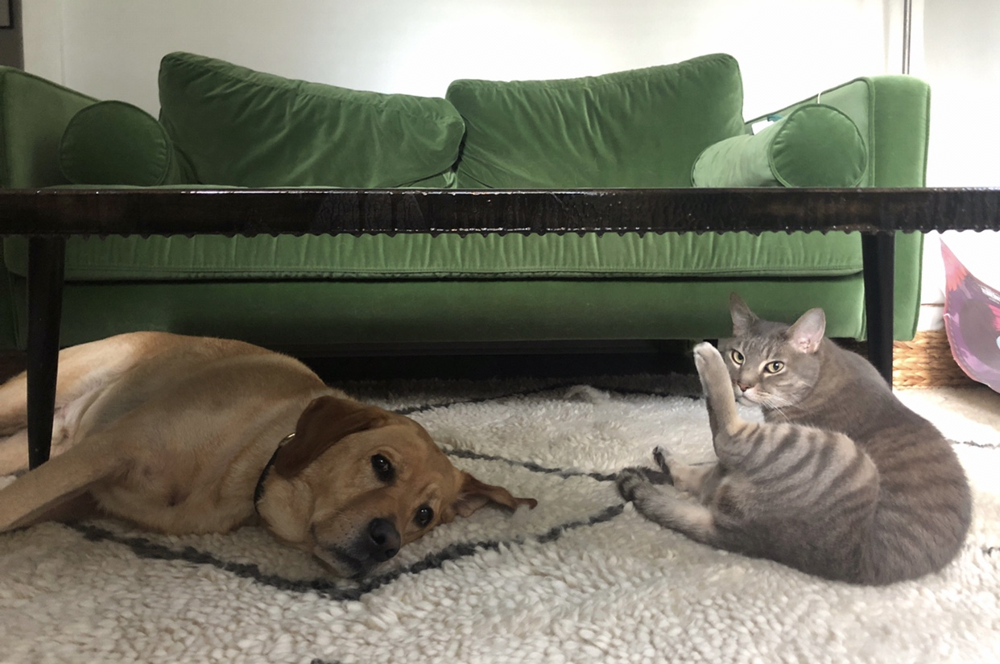

How We Met
Well, we didn't have much of a choice. You see, my mom married his dad. At first we didn't like eachother.
Jack and Dexter
Reasons why we didn't like eachother...
- My mom started petting Jack more than me
- We had to share a home
- Jack hated cats
How we started to tolerate one another...
We started realizing our parents got sad when we fought. We figured since it looked like we were going to be stuck under the same roof, it was time to make some changes. Here are some articles that helped us make those changes:
Practive Makes Perfect
After co-existing for a few months, we realized it was actually better to not be alone all day. I can happily say that it's now been a healthy four years and Jack is my best friend.

Me and My Best Friend